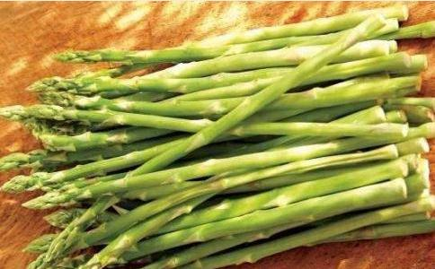

说起
关于一个人平均需要多少蛋白质的持续争论几乎不能改变我们对蛋白质的需求。这能怪我们吗？蛋白质可是构建我们身体之厦的最基础要素之一。
大多数人想到蛋白质时，脑海中就会浮现出起司、鸡蛋和一只羊腿。但是你知道每一种全食物（对的，每一种）都含有蛋白质吗？从你早上一起床吃的
植物性食物一般不含胆固醇，高膳食纤维，可使身体成为硷性体质。相反的是，所有动物质食物缺乏膳食纤维，易造成酸性体质，容易导致骨骼中的钙流失，并且减少血液中的氧含量，对身体的消化系统/淋巴系统有不好的影响。
你可能已经听说过如火如荼的关于“完全”和“不完全”蛋白质和“食品组合”的争论，但是要谨慎，这些话题都陷入了谬论和神化的误区。以下是到目前为止我的一些发现：
“完全蛋白质”指的是由9种人类必需氨基酸以一个合适的比例构造出的蛋白质。“不完全蛋白质”则指的是儘管含有所有的必需氨基酸，但是其中的一种或者几种必需氨基酸的含量极低，这也被叫做“限制性氨基酸”。虽然存在一个事实，就是大多纯植物性食物含有一个或多个限制性氨基酸，因此“不完全”，但是这不能成为你吃掉一块牛排的理由。我们的身体是很聪明的，每一种进入体内的食物首先必须被分解，然后营养才会被吸收。在这个消化过程中，从所有来源得到的氨基酸链都会被分解为我们身体所用。如果你吃一个由水果、蔬菜、谷物和豆类混合的食物组合，你的身体中的消化系统只是从这个“氨基汤”中收集它所需的养分。有越来越多的素食健美运动员、超马拉松运动员和功成名就的运动员可以证明植物性饮食是很容易很成功的满足你的蛋白质需求的。
因为所有的食物都有蛋白质，当考虑到创造一个均衡的饮食时，你有数百万种选择来满足你身体需要的不同含量的蛋白质。我选了十种营养丰富的植物作为选择的开始，你可能会对我的列表中某些蔬菜、坚果和谷物的蛋白质含量及其它的
当涉及到蛋白质，更多不一定是好。推荐的膳食摄取量（RDA）是指平均水准，久坐不动的成人只有0.8克/公斤（体重）。一些医疗界专业人士认为，这一水准太高了。无论你选择遵循谁的建议，事实上，每个人的蛋白质需求也不一样，但是所有的需求都会与一份植物性饮食相对应。
好处多多的高蛋白质植物性食物：
如果你和我一样锺意南瓜，特别是在秋天，上次你蒸了一些南瓜，你的种子怎么处理了？一盎司南瓜子含有9.35克的蛋白质！比同等数量的绞细牛肉还多两克。高蛋白质使南瓜成为任何沙拉和点心的绝佳伴侣。
色氨酸：抑制忧郁（转化成血清素和烟酸）
谷氨酸（需要创建GABA）：减轻压力，有助于缓解焦虑和其他相关的情况。
锌：提高免疫系统的功能，避免骨质酥松。
植物甾醇：降低低密度脂蛋白胆固醇（坏的胆固醇）和提高高密度脂蛋白胆固醇（好的胆固醇）；也可以有效地预防癌症。
南瓜子还富含锰、磷、铜、维他命K、维他命E、B族维生素如硫胺素、核黄素、烟酸、泛酸、维生素B-6（？哆醇）、叶酸、钾、钙、铁、镁、锌、硒等等！
如果南瓜子不是你的菜，也不要担心，还有很多富含蛋白质的种子可以选择。
芦笋烧烤芦笋加上一丝丝香醋就足以让我流口水了。这种有八嫩芽的美味素蔬菜含有3.08克蛋白质，对于这么细长弱小的植物来说相当了不起了。
维生素K：芦笋是维生素K的头号植物性来源，能预防骨质疏松和骨关节炎。
维生素A和叶酸：抗衰老、抗炎、确保心脏健康，预防出生缺陷。
利尿剂：减少水储留。
催欲剂：噢！啦！啦！
芦笋也含有丰富的钾、谷胱甘？、维生素C、抗氧化剂（谷氨酸、甘氨酸、半胱氨酸）等等。
白花菜很多年来我都不是白花菜的狂热崇拜者。我一直以为一个白色蔬菜能有多健康？但是自从我开始瞭解白花菜的好处及所有十字花科植物的成员，我开始对这种蔬菜刮目相看。一杯煮熟的白花菜=2.28克蛋白质和大量能减少患心血管疾病和癌症的营养。
类
萝卜硫素：作为抗癌媒的强有力指示体。
ω-3脂肪酸：减少炎症。
白花菜也是维生素C、锰、硫代
如果你是在美国长大，你可能吃过花生酱和果冻三明治，但我怀疑你是否知道这种小吃到底有多健康。一盎司（约28克干烤无盐花生）=6.71克的蛋白质。
辅（酉每）Q10：在低氧环境下保护心脏。
白藜芦醇：生物类黄酮，被认为能改善大脑的血流量和降低低密度脂蛋白胆固醇。
烟硷酸：协助复苏的细胞损伤，预防阿尔茨海默病和与年龄相关的认知问题。
花生也是钙、铁、核黄素、烟硷酸、泛酸、维生素b1、维生素b6、叶酸、铜、锰、钾、钙、铁、镁、锌、硒、维生素E、抗氧化剂（多酚p香豆酸）等物质的很好的来源。
燕麦因为多年来提供给小孤儿奥利弗或旧学校的囚犯作为早饭而有一个坏名声，事实上它的营养足以成为国王才能享用的食物。一个煮杯含有高达6.08克的蛋白质并且是纤维的重要来源，有助于稳定血糖水准。我喜欢在早上用一点香蕉和肉桂混合在一起---嗯，太美味了！
硒（抗氧化剂结合维生素E）：增强免疫力和提升心情，以及抗癌媒的强有力指示体。
减肥：保持血糖水准。高水准的纤维使你长时间有饱食感。
镁：协助能量的产生，保持强健骨骼，并且可能缓解经前综合症。
磷：协助保持骨骼健康，增加产能和有助于一个健康的消化系统。
燕麦片也是色氨酸、铁、钙、维生素B如硫胺素、核黄素、烟酸、维生素E、锌、铜、铁、锰、镁和等等元素的来源。
绿 你可能在炒豆子（已经发芽了）或者新鲜豆子中看见过这种小豆芽了，但这么多年来它并没有得到多少荣誉。大多数豆类中富含蛋白质和水溶性纤维，儘管
卵磷脂：降低血液中的胆固醇含量，降低肝脂肪。
锌：随着蛋白质和其他维生素在绿豆中共同作用，锌有助于增强你的指甲。
植物雌激素：含有许多针对肌肤的抗衰老成分。这些植物雌激素作用于在皮肤中发现的雌激素受体，刺激合成透明质酸、胶原蛋白和弹性蛋白，这些都是构成皮肤必不可少的成分。
绿豆芽也富含维生素A、B族维生素、维生素C、维生素D、维生素E、维生素K、叶酸、铁、钾、钙、磷、镁、锌等等。
杏仁大致上在任何时候杏仁都算得上是一个美妙的零食，无论从其蛋白质含量还是营养密度来看。当谈到营养密度不得不提杏仁的顶部螺母链，他们会使你长时间产生饱腹的感觉。一盎司（约24克果仁）含有6.03克的蛋白质，它们也是任何点心或者大餐的绝佳搭配。
苯丙氨酸：帮助实现认知功能的健全。
营养丰富：使你长时间饱腹，可以帮助减肥。
维生素E/镁：对于心脏和肌肉健康非常重要。
杏仁也富含钙、磷、铁、镁、锌、硒、铜、烟酸、锰、核黄素、叶酸等等。
菠菜我们都知道菠菜是一种特殊的绿叶菜。从大力水手到高级餐厅的昂贵沙拉中，菠菜都扮演了一个重要的角色。1杯煮熟的菠菜=5.35克的蛋白质。它富含类黄酮（一种含有抗癌特性的物质）。菠菜对你的皮肤、眼睛、大脑和你的骨头都是很好的！
新黄质和黄质：抗炎epoxyxanthophylls（一种独特的抗癌类胡萝卜素）。
叶黄素和
维生素K：确保有健康的神经系统和大脑功能，骨骼健康（一满杯的菠菜含有1000%的RDA的维生素K）
维生素A：加强免疫力和促进皮肤新陈代谢。
菠菜的维生素C和其他抗氧化剂、类黄酮、β-胡萝卜素、锰、锌、硒等含量丰富。
花椰菜（西兰花） 花椰菜（西兰花）和白花菜在碳水化合物组成上面有着惊人的相似，也是基于这样的事实，即他们都是在十字花科植物的
硫代葡萄糖甘（身体处理成萝卜硫素）：帮助肌肤排毒和自我修复，以及去除体内能增加胃癌的风险的幽门螺杆菌。
β-胡萝卜素、锌和硒：所有的工作都是为了加强免疫系统。
引朵3甲醇：一种强大的抗氧化剂和抗致癌物质，可能阻碍乳腺癌、宫颈癌和前列腺癌的增长以及提高肝功能。
花椰菜（西兰花）也是叶酸、维生素C、钙（事实上大多数是乳制品）、叶黄素和玉米黄素、B6、叶酸等等的一个好来源。
藜麦在我前面所有列表所提的植物都不足以与藜麦的潜力相比。就其本身而言，它含有完美的蛋白质，可谓谷物之王。每单位含有16%的蛋白质是所有比例最高的！这意味着，四分之一杯（干）的藜麦已经含有6克*的蛋白质。如果你将这种谷物与几根芦笋和一朵美丽的白花菜搭配，加上花椰菜和发芽的绿豆一起炒，你将在简单的一餐饭中就享受30克甚至更多蛋白质。
镁：放松肌肉和血管，它可以帮助调节血压。
锰和铜：都可以作为抗氧化剂，保护人体免受自由基的侵害。
木酚素：一种可以降低患心脏病以及某些类型的癌症风险的植物营养素。
藜麦同时也富含铁、钙、钾、锌、维生素E、硒、锰、铜、磷和色氨酸等等。